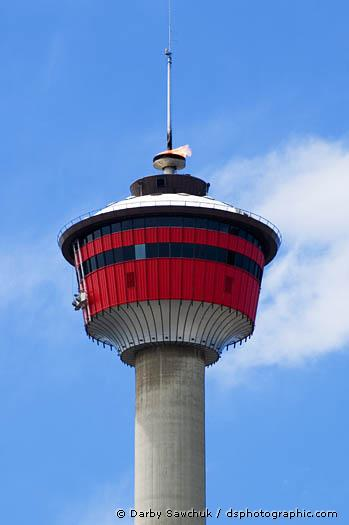
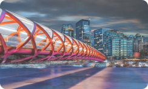
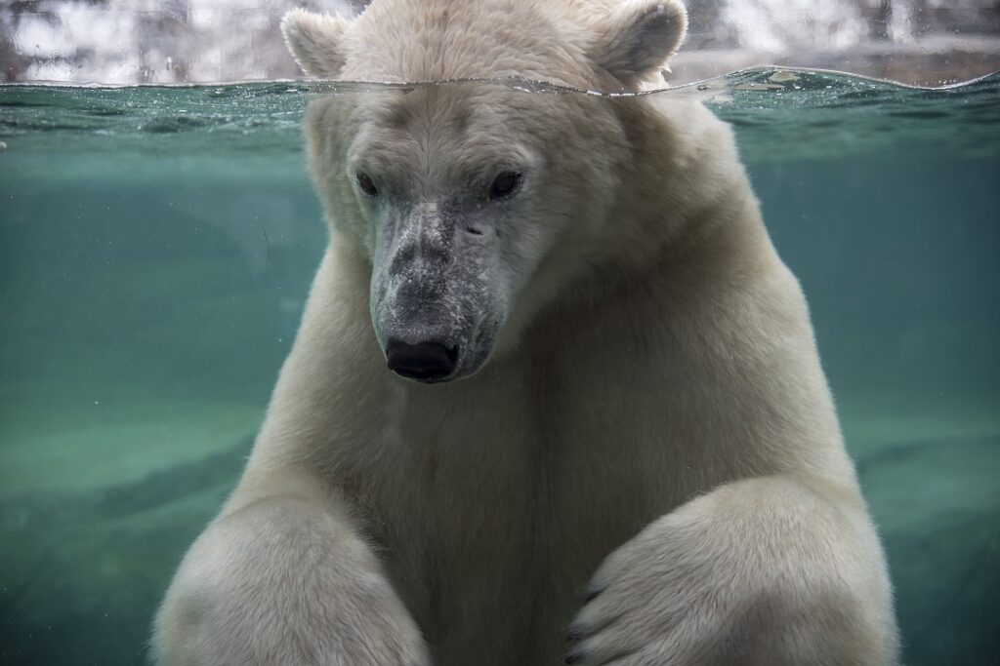
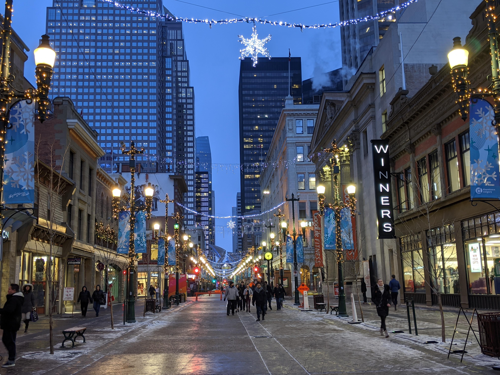

Activities

Calgary Tower
Iconic observation tower in downtown Calgary
+
Prince's Island Park
Beautiful park in the heart of Calgary
+

Peace Bridge
Famous pedestrian bridge across the Bow River
+

Bow River Pathway
Scenic pathway running along the Bow River
+

Calgary Zoo
Wildlife, botanical gardens & immersive exhibits
+

Stephen Avenue Walk
Historic downtown street with shops, cafés & nightlife
+